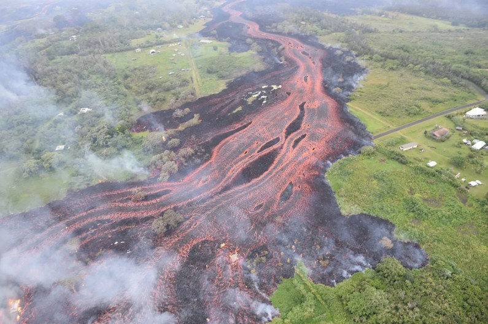

Kīlauea
Place: Kīlauea, Hawaiʻi Island
Type: Active shield volcano / volcanic region
Story it tells: One of the world’s most active volcanoes, a sacred landscape associated with Pele, and a force that continues to reshape Hawaiʻi Island through destruction and creation.

Kīlauea is one of the most active volcanoes on Earth and one of the defining geological forces behind Hawaiʻi Island itself. The name is often translated as “spewing” or “much spreading,” a reference to the volcano’s continual outpouring of lava across the landscape. Located along the southeastern portion of Hawaiʻi Island, Kīlauea has shaped both the physical island and the cultural traditions surrounding it for centuries.
Kīlauea is a shield volcano, formed gradually through repeated lava flows over thousands of years. Although it is younger than neighboring Mauna Loa, it has been the most continuously active volcano in Hawaiʻi's recorded history. Lava from Kīlauea has repeatedly altered coastlines, buried communities, created new land, and transformed forests and shorelines across the island.
In Hawaiian tradition, Kīlauea is deeply associated with Pele, the akua (deity) of volcanoes and fire. Halemaʻumaʻu crater near the volcano’s summit is traditionally regarded as her home. Stories connected to Pele describe both the destructive and life-giving power of volcanic activity, reflecting the way lava simultaneously destroys existing landscapes while creating new land.
Western written accounts of Kīlauea began in the early 1800s, though Native Hawaiians had long preserved knowledge of eruptions through oral traditions. One of the deadliest eruptions in Hawaiian history occurred around 1790, when explosive activity and volcanic gases killed more than four hundred people near the summit area during what is now referred to as the Keanakākoʻi eruption.
From 1983 to 2018, Kīlauea erupted almost continuously from vents along its East Rift Zone. During that period, lava flows destroyed the communities of Kalapana and Kaimū while covering roads, homes, and coastlines. Even sacred sites were not spared, with Wahaʻula Heiau eventually reclaimed by lava and the expanding landscape of Kīlauea itself. In 2018, another major eruption in lower Puna sent lava through Leilani Estates and surrounding communities, destroying hundreds of structures and dramatically reshaping the region once again.
At the same time, Kīlauea remains one of Hawaiʻi’s most visited and studied natural landmarks. Hawaiʻi Volcanoes National Park, established in 1916, attracts millions of visitors seeking to witness the volcano’s constantly changing landscape. Scientists at the Hawaiian Volcano Observatory continue to monitor eruptions, earthquakes, and volcanic activity connected to Kīlauea and the broader island.
Today, Kīlauea exists simultaneously as a sacred place, a scientific site, a tourist destination, and an active force of creation.